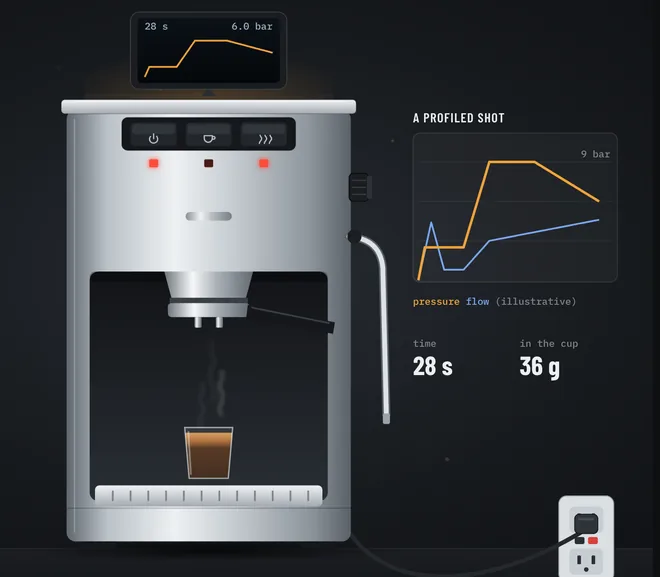

Gaggiuino was built for the Gaggia Classic, and its official guide covers the install step by step. These pages sit beside the guide: they keep your place in it, show which steps and mods your model needs, and add the planning, checking and troubleshooting tools around it, in the order a build uses them.
Everything here is unofficial community material, not reviewed by the Gaggiuino project. The official guide is the instructions: every step on these pages links to the part of it that covers the step, and if the two ever disagree, follow the guide. Mains can kill you: cord out for every step until the power-on checks pass.

Scroll through the whole build as an animation, from a stock Gaggia to a profiled shot. Each step links to the page that covers it.
Watch the conversionAn x-ray of the stock machine you can run through heat, brew, hot water and steam, every part explained, and a live circuit you can switch.
What the PCB, sensors and SSR take over, how they hold the temperature and drive the pump, and the optional scales and tank sensor.
138 acronyms and shop words used across the site, each with a plain definition and links to where it comes up.
New or used machine, kit or parts, Bluetooth or hardware scales, the tank sensor and your model's extras, with the total. Enter real quotes as you get them.
2What to look at and ask about at a seller's house, saved per listing, with a price gauge and what the build adds on top.
3Tell the Classic, Pro, Eco, Evo Pro and E24 apart from the label and the front, with what each changes for the build. Set yours once and every page follows.
4Every line of the parts list for your model and install path, with links, status, price paid and box contents.
Eight phases of tickable steps, from the bench test to calibration, each linked to its section of the official guide, with a stop before first power-on. Prints as one checklist.
6The thermocouple, the pressure sensor (tap block or T-fitting) and the optional resettable fuse, each drawn step by step with the official photos linked.
7Every wire for your path: the seven stock-integration wires, or each run of a custom harness, with its ends, connectors and length, beside a link to the official schematic.
8Wire to buy by gauge and color, the connectors to crimp, and every run to cut, with your own extra length. Tick runs off as you cut.
9Printable flag labels for each wire end and for the stock connectors, using the official guide's names, as a PDF for Letter or A4.
10About 63 unplugged checks for your schematic. Enter the meter reading and each one marks itself pass or fail; the page says when you're ready to plug in. Prints with blanks for readings.
Pick your model, voltage and install path. The runbook, checks, wiring and troubleshooting pages then show only what applies to your machine. Until you do, every note shows, tagged with the machines it's for.
The official guide splits the machines in two: the Gaggia Classic (GC), and the Gaggia Classic Pro (GCP), which takes in the Pro, Eco, Evo Pro and E24. Plumbing, switch layout and schematics follow the family.
The 230 V Classic sold from 2015 to 2018 (SIN035U, RI9403) has no 3-way valve, and the official docs list it as not compatible. Every other model in their compatibility table is; the Classic UP and GT aren't in it.
230 V Pro-family machines with the Eco board switch themselves off after 20 idle minutes, and their power switch springs back. Remove a spring so the switch stays on, and use custom wiring: the guide recommends against stock integration on these.
US Evo Pro and E24 machines ship with a 9 bar OPV. Gaggiuino needs it at 10 to 12 bar, because an OPV starts to open below its rating and the controller can't tell when. A 12 bar spring, or 3 or 4 M3 washers behind the 9 bar one.
Most Evo Pro and E24 machines gather the switch connectors in one shield. Each connector comes out, gets its own silicone tape or heat shrink and a label, so none is left bare when it's disconnected.
Most US Classics have a two-prong cord and an ungrounded case. The guide fits a C14 three-pin inlet, a grounded cord and ground wires to the boiler and the cup warmer.
A T-fitting in the line from pump to boiler (PTFE tube and push-to-connect fittings on a Classic, braided hose and clamps on a ProPTFE tube and push-to-connect fittings on your Classicbraided hose and clamps on the Pro family), or the pressure tap block, which fits every model.
Leave Settings, Boiler on the defaults: the Gen 3 manual recommends them for the Classic and the whole Pro family. Brew and steam on together start hot water mode, as on the stock machine.